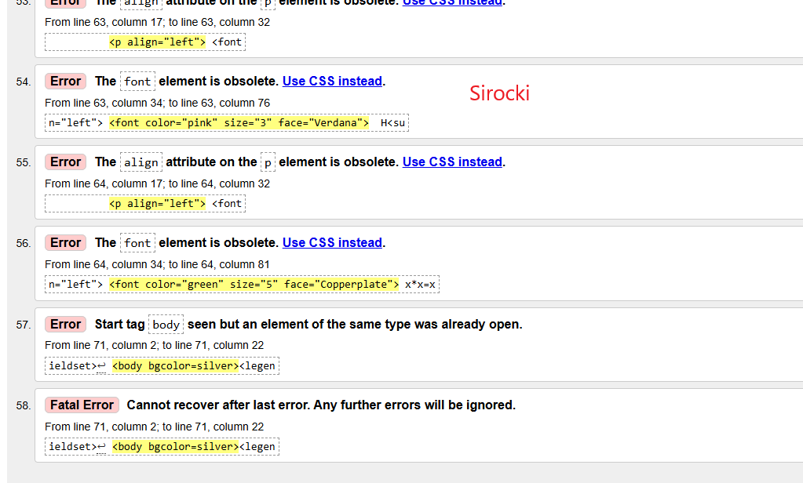
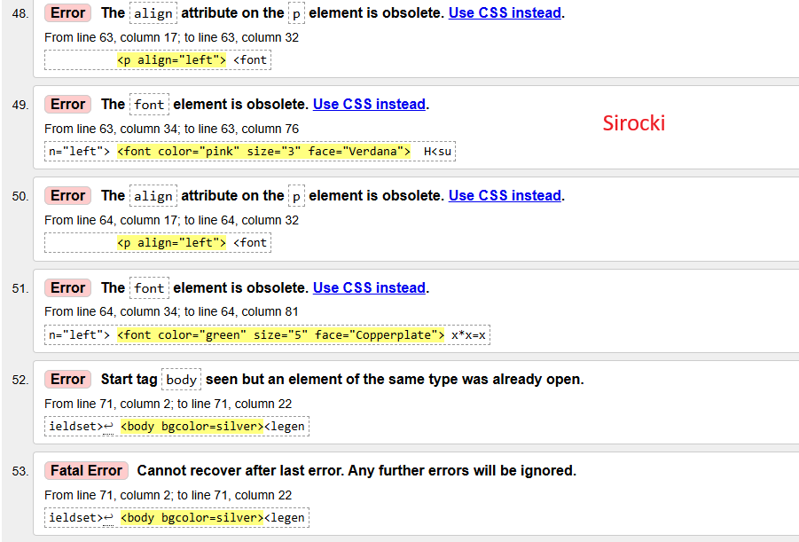

czym jest walidator?:
Walidator to program sprawdzający poprawność dokumentu o określonej składni
Walidacja strony HTM co to?:
Walidacja HTML to proces, w którym narzędzie (walidator) sprawdza poprawność kodu pod kątem błędów składniowych:

